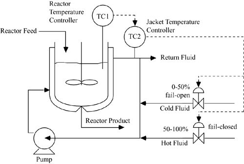
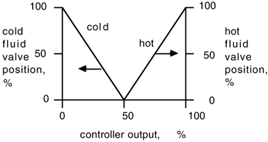

| [ Team LiB ] |
|
M8.6 Other ConsiderationsNonlinear BehaviorAlthough general nonlinear models were developed in this module, and some nonlinear steady-state results were presented, dynamic simulations were based on linear models. Although the responses on the physical (nonlinear) system will be similar to the linear results for small changes around the designed operating point, the nonlinear behavior can be significantly different for large changes. Download the nonlinear SIMULINK/MATLAB files from the book web page and perform closed-loop simulations. Show that responses of the nonlinear system are similar to the linear simulations, for small setpoint changes. For a sequence of larger setpoint changes, show that the nonlinear system begins to deviate significantly from the linear system. Split-Range ControlThus far we have only considered the case where coolant was circulated through the jacket at a lower temperature than the reactor vessel, to remove energy due to the exothermic reaction. During reactor start-up, however, it may be necessary to add energy to the reactor to bring the temperature up to a point where the reaction can be initiated. In this case a warm fluid must be circulated through the jacket. This requires a split-range controller as shown in Figure M8-8 and M8-9. Notice that the cold fluid is fail-open, while the hot fluid is fail-closed. Figure M8-8. Split-range strategy for secondary controller. Figure M8-9. Split-range controller action. |
| [ Team LiB ] |
|